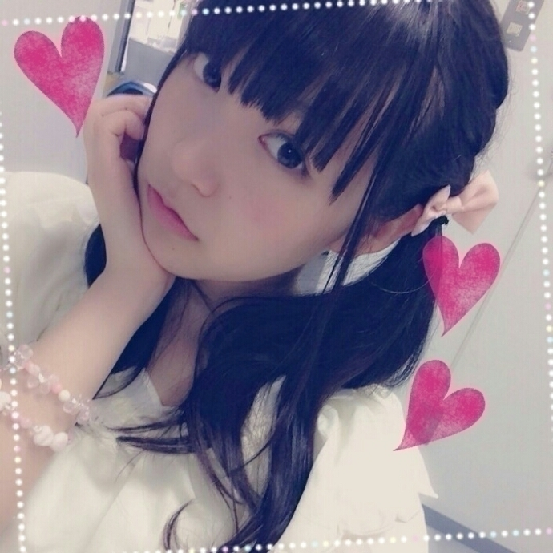

| 2014/08 24 Sun | ひめたん-OoO-その472 |
るんるんブログのひめたんいじりは
あれは一体何ですかね(´｡･ч･｡｀)
いや、別に喜んでないですよ？
別に喜んでないですし
別ににやにやとかしてないですけども(´｡･ч･｡｀)
......てゆかあれ褒めてないよね？
褒める気もないよね
さて全国ツアー福岡・仙台公演終わりました！
ありがとうございました＼(^o^)／
◎21日 福岡公演

うさぎさんついん
1年ぶりの福岡ということで
乃木坂ライブ初参加だよって方も
たくさんいらっしゃったと思うけど
楽しんでいただけたかな？
コールも完璧だったよー∩´ω`∩
でね、夜公演のMCの中で
美彩「好きやけん！」
陽菜「好きっちゃ！」
清羅「好いとーばい！」
って言ってたんだけどちょっと待って何！
九州の方言ほんとにかわいい！
うらやましい(＊^O^＊)
いつか日記でも言ったことあるけど
ひめたんね九州なまりほんと好きなのよ～＊
◎24日 仙台公演

編み込みついん
毎公演誰かがびーむするみたいな風潮
すてきだと思います(<・ω・>)
ちなみに昼公演ではひめたんびーむしたよ♡
仙台のみなさん初めての生びーむいかがだったかな
夜公演はかずみんびーむしてたよ～
そうそう、ライブ会場でよく
「○○して～」みたいなうちわを
作ってくれるひとがいらっしゃるでしょ？
最近はその仲間で
「びーむして～」ってうちわをみるの！
今までぼちぼちは見たことあったけど
この真夏の全国ツアーで
一気によく見るようになった♡♡
ほんとに嬉しいなあ(ノ)ω(ヾ)
あさっては名古屋公演ですね！
参加するよーって方 よろしくお願いします♪
ちなみにいまのとこツアー日全部雨らしいけど
名古屋は晴れるかなあ......？
気をつけてきてね～＊
さらに乃木坂46 結成3周年迎えました
ここまでくることができたのは
みなさんのおかげです( ˘ω˘ )
いつも本当にありがとう！
いつかみなさんに
乃木坂46を、ひめたんを応援しててよかったと
心から思っていただける日がくるといいな
あまり余計なことを考えずに
とにかく上り坂！日進月歩！猪突猛進！
4年目もどうぞよろしくお願いします！
のぎ天#7はキャンプ回前編☆
新アンダーメンバーで
キャンプをしてきましたー

ひめたんねーめっちゃ楽しかったから
長々と語りたいところなんだけど
まだ観てないんですよー(´-ω-`)
だから次回の日記でいろいろお話するから
それまでにみんなもチェックしてね☆
配信日に早速 感想を
コメントに書いてくれてるひともいました！
やー優秀だねーでももっかい観てもいいからね～
ライブお留守番ちーむのみなさんは
乃木のの聴いてくれたかな？
斉藤優里ちゃん
大和里菜ちゃん でした☆
ひめたんはこちらも
リアルタイムで聴けなかったけど
感想教えてー待ってるよー( ˆωˆ )
告知が遅れてしまいましたが
アニカンRヤンヤン!!Summer特別号
寧々、中田、能條、中元で
載せていただいています！
チェックよろしくお願いします( ´ ▽ ` )☆

 ひめたんは、恋する女の子の味方ですか？
ひめたんは、恋する女の子の味方ですか？
二学期始まって距離空いてたら
どうしようとか考えちゃって怖い
助けてひめかお姫様(´･_･`)
なんてかわいいお悩みなの！乙女！♡
夏休み明けて日焼けとかして
もっとすてきになってるかもしれない！
そう思ったら学校楽しみになるよね♪
応援してるよー！
ささくれが痛いです助けてください
ひめなら見つけた瞬間に剥いちゃう♡笑
きゅんきゅん王国へカモーンさせて頂きます。
姫、僕はどの職業へ勤めましょうか？
お花屋さんが不在な気がする。
ひめはマーガレットが好きだなー
頼んだよ(＊^ω^＊)ｷﾗｯ
ひめたんは『うすピンク』と
『ビビットピンク』だったらどっちか好き？
うすぴんく！
ひめたん ライブ全部行けない俺は
キュンキュン王国の住人を
やめた方がいいでしょうか？
( `ω´ )しゃー
何を言う！応援してくれる気持ちが
何より嬉しいしそれだけで十分！
きゅんきゅん王国に住んで
居心地いいなーってごろごろしてくれたら
ひめはそれだけで幸せなのだよ～＊
ひめたんの日記の
コメント欄下２ケタに46を踏んだ方へ
手書きでコメ返するコーナー
＼ ひめたん46 ／


いつもたくさんのコメント
ありがとうございます
ツアーも残り3公演！
全力で頑張りたいと思います＼(^o^)／
これから参戦するみなさんよろしくね☆
ちなみに昨日は
万理華と同じホテルのお部屋で
夜な夜な語りだして気づいたら午前4時半......
それでも今日1日元気だった私たちは
まだ若いってことだよね♡
万理華らーぶ\( ˆoˆ)/\(ˆoˆ )/
乃木どこ観てね！
(＊´・ω・＊)
コメント(788)
2014/08/24 23:48